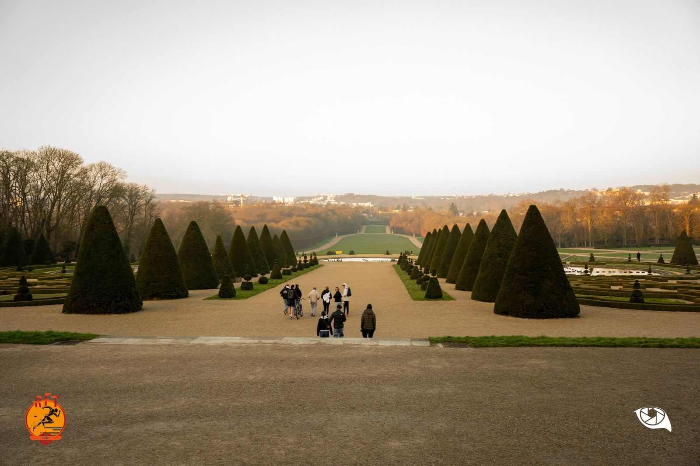
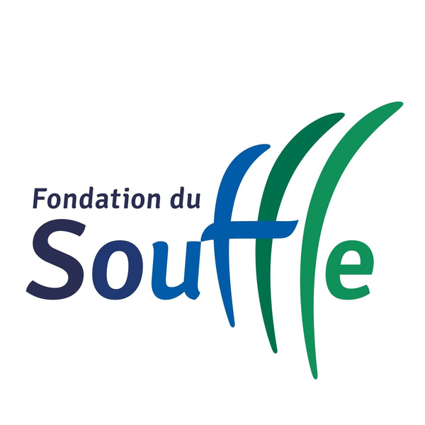
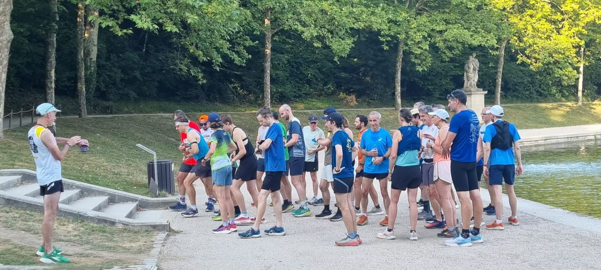
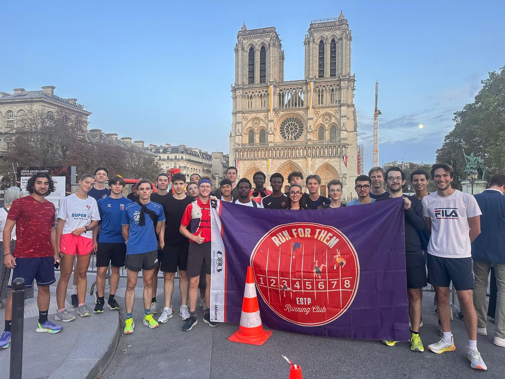

Run For Them ESTP – association étudiante de course à pied
Qui sommes-nous ?
Run For Them est l’association étudiante de course à pied de l’École Supérieure des Travaux Publics. Nous proposons des entraînements hebdomadaires variés (séance sur piste, fractionné, footing…), afin de permettre à tous les étudiants de pratiquer la course à pied, qu’ils soient débutants ou initiés.
Chaque année, nous organisons une course chronométrée (5 km & 10 km), ouverte à tous au Parc de Sceaux. L’ensemble des bénéfices de cette course est reversé à la Fondation du Souffle.
Nos entraînements
RUN FOR THEM
Une course annuelle au Parc de Sceaux
Notre association organise chaque année une course chronométrée au Parc de Sceaux. Tous les fonds récoltés à l’issue de cet événement sont reversés à la Fondation du Souffle.
En savoir plus sur notre course
La Fondation du Souffle
La Fondation du Souffle, reconnue d’utilité publique, se mobilise au quotidien sur plusieurs fronts pour lutter contre toutes les maladies respiratoires et les agresseurs du souffle comme la pollution, le tabac…
Elle est la seule fondation exclusivement dédiée à la lutte contre les maladies respiratoires. Entièrement privée, elle agit grâce à la générosité de ses donateurs, particuliers et mécènes. Elle a trois missions : financer la recherche scientifique française en pneumologie, organiser des actions d’information et de prévention auprès du grand public et apporter un soutien financier aux malades respiratoires en situation de précarité.
Respirer est la chose la plus naturelle au monde, nul besoin d’y penser. Mais quand la respiration devient une souffrance, un combat, rien d’autre n’a plus d’importance. Protéger le souffle, c’est protéger la vie ! C’est dans ce but que la Fondation du Souffle finance la recherche respiratoire.
Découvrir la Fondation du SouffleLa vie de l’asso
Entraînements, sorties nocturnes dans Paris et bénévolat : quelques moments partagés avec Run For Them.


